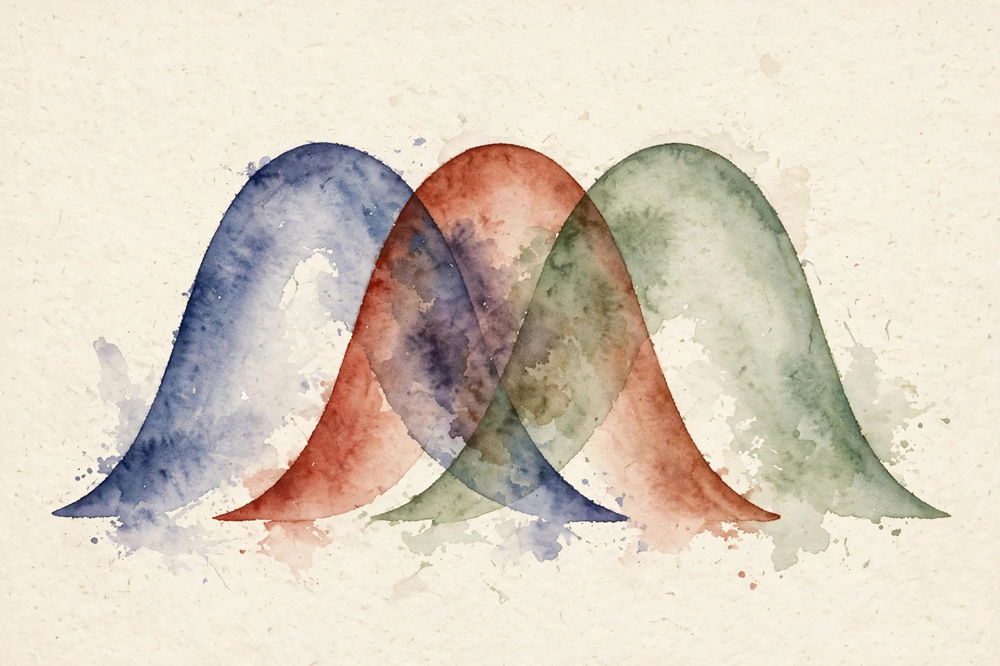
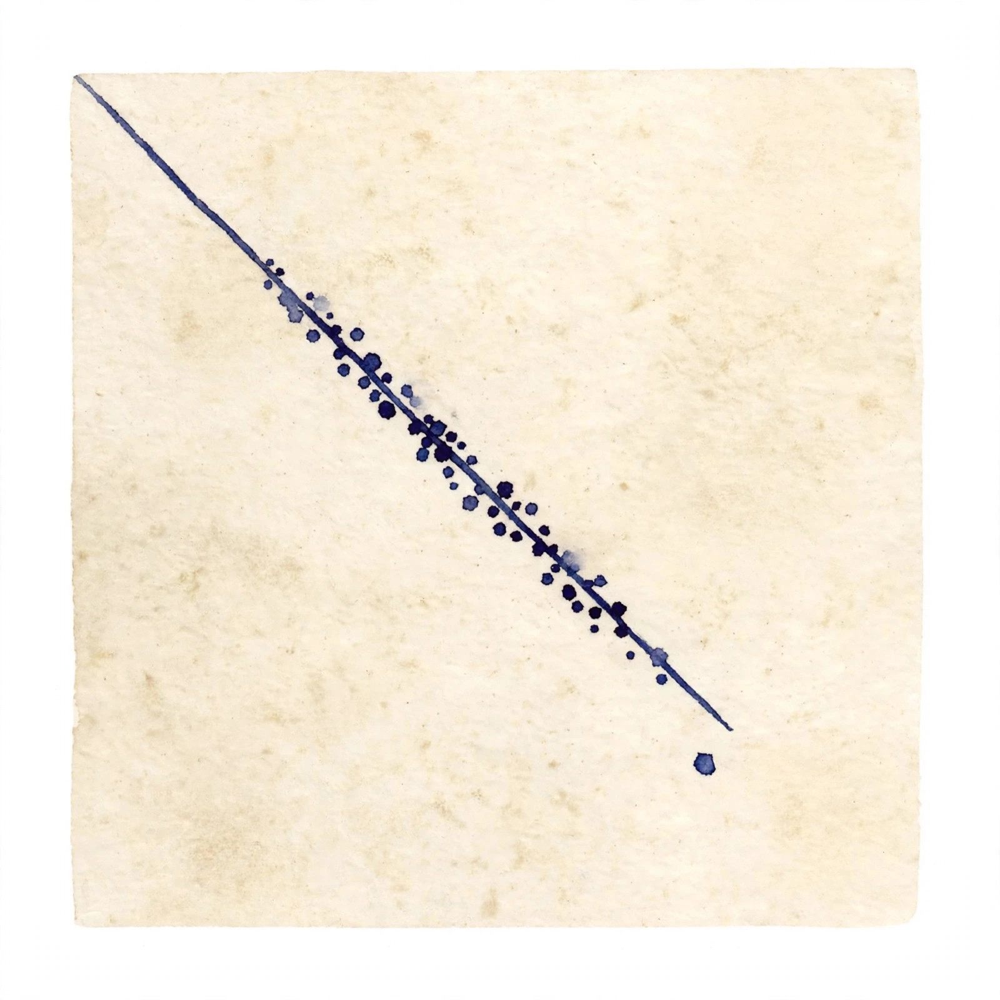

U03 · Choice estimation and Bayesian learning
How do we fit parameters when some of the data never arrives, and how do we combine what we believed before with what the data says? This unit starts at the maximum likelihood peak, climbs it with EM when labels are hidden, and then lets a prior pull the peak toward yesterday's belief.

Sourcing. No full transcript exists for sessions S05 and S06. This companion narrates content/v2/cs329h/lessons/u03_lesson.md. All twelve concepts are taught as independent theory: the lesson marks the sessions PLANNED and every concept PLANNED / SOURCE ATTRIBUTION PENDING.
How to read the tags. Every number carries its lesson section. Anything the companion computes is tagged Illustration. A Interpretation tag marks the companion's own reading of the lesson. Where the lesson leaves a value out, the page says so in words.
From the lesson A fact, number, or mechanism from the lesson.
Illustration Invented by the companion: an analogy, a toy with made-up values, or a what-if. Never lecture content.
Interpretation The companion's reading of why a lesson fact matters. The fact is the lesson's, the gloss is ours.
C01 · Contract 6 Points to the exact lesson section behind a claim or number.
Section 1 · C01, C02
From the lessonC01 · Contract 3, 5, 6
The MLE is a peak-finder. Plot how probable the data looks under each candidate parameter, and pick the peak. It uses the data and nothing else. The toy: 7 wins in 10 trials, true bias 0.65. The log-likelihood is 7 log p + 3 log(1 - p). Differentiate and the maximizer falls out at p = 0.70. The second derivative is negative, so it is a maximum. The gap from the truth comes from sample noise: with n = 10 the standard error is sqrt(0.7 times 0.3 / 10) = 0.145. Lesson figure u03_f01 plots the curve and marks the peak at 0.70 with the truth at 0.65.
From the lessonC01 · Contract 11, C02 · Contract 3, 5, 11
Two limits. Under misspecification the MLE converges to the family member closest in KL divergence, not to the truth. Fitting a single coin bias to mixture data is the counterexample. And when the data comes from two hidden groups, a latent variable is a missing column in the spreadsheet: sum over its possible values to get the likelihood of what you saw. Direct optimization is hard because the log of a sum does not split. EM handles it by working with the complete-data likelihood instead. The non-identifiable warning: a mixture of two Bernoullis observed only through binary outcomes has a flat likelihood. The lesson build verified it: every start gave -277.0138. The latent variable adds nothing identifiable there.
The MLE is a peak-finder that uses the data and nothing else. Fast, consistent, and noisy at small n.
Section 2 · C03
From the lessonC03 · Contract 3, 5, 6
EM guesses the labels softly, fits the parameters to the soft labels, then re-guesses. Each round explains the data better than the last. The E-step sets the lower bound to touch the true likelihood by using the posterior over the latent labels. The M-step maximizes the bound. Since the bound touches and then rises, the true likelihood rises too: monotone ascent. The lesson toy fits 400 scores from two Gaussians with hidden group labels. Over 40 iterations the log-likelihood climbs from -775.9 to -738.2, monotone, recovering means -0.99 and 1.97 against truths of -1.0 and 2.0. Lesson figure u03_f02 draws the rising curve.
From the lessonC03 · Contract 8, 11
The correctness check is an assertion on the diffs: the likelihood never decreases. With true labels supplied, one M-step gives the supervised MLE. The failure mode is local optima. Different starts give different answers, and symmetric starts in a symmetric mixture never break symmetry. The lesson verified the trap: Bernoulli starts all stuck at -277.0. The fix is multiple random restarts, kept honest by held-out likelihood.
The log of a sum does not split. EM climbs a touching lower bound instead, and the likelihood can only rise.
Section 3 · C04, C05, C06
From the lessonC04 · Contract 3, 5, 6
The prior is yesterday's belief as a distribution. Multiply by what the data says, renormalize, and you get today's belief. More data means the data's voice gets louder. The conjugate toy: a Beta(2,2) prior on the coin bias, 7 wins in 10 trials. Beta prior times Binomial likelihood gives a Beta posterior, exponents add: Beta(9,5). The posterior mean is 9/14 = 0.643, sitting between the prior mean 0.5 and the MLE 0.70. The 90 percent interval is 0.42 to 0.83. Lesson figure u03_f03 plots prior, likelihood, and posterior.
From the lessonC04 · Contract 11
The dogmatic prior is the counterexample. A point mass at 0.5 gives a point-mass posterior: no learning, ever. Beta(1000,1000) with n = 10 lets the data move the mean by only 0.005. A prior that cannot be moved is not a belief. It is a refusal.
From the lessonC05 · Contract 3, 5, 6
MAP is the MLE with the prior pulling toward its center. Weak prior: near the MLE. Strong prior: near the prior's favorite. The log posterior is the log-likelihood plus the log-prior, so maximizing it equals maximizing the likelihood minus a penalty. For the Beta(a,a) prior the closed form is MAP = (7 + a - 1)/(10 + 2a - 2). As the prior strength grows 1, 2, 10, 50, the MAP moves 0.700, 0.667, 0.571, 0.519. Strength 1 is the uniform prior and recovers the MLE. Lesson figure u03_f04 draws the falling bars.
MAP is the MLE with the prior pulling. The penalty is the prior in disguise.
From the lessonC06 · Contract 3, 5, 6
The point prediction plugs one number in. The predictive distribution averages over every plausible number, weighted by the posterior. The average keeps the uncertainty. For the Beta-Binomial the integral collapses to the posterior mean 0.643, but the spread matters: the 90 percent interval is 0.423 to 0.830 from 5000 posterior draws, so reporting 0.64 alone overstates confidence badly. The full predictive distribution over the probability itself is the Beta(9,5) density. Lesson figure u03_f05 shows the histogram with the interval.
The point prediction hides the spread. Average over the posterior when the decision needs the uncertainty.
Illustration Pull the prior strength and watch the MAP slide from the data toward the prior. The formula is the lesson's C05 closed form. The slider is yours.
2
MAP appears here.
From the lessonC05 · Contract 5 7 wins in 10 trials, Beta(a,a) prior. At a = 1 the slider must read 0.700, at a = 50 it must read 0.519.
Section 4 · C07, C08, C09
From the lessonC07 · Contract 3, 5, 6
Does finetuning a pretrained model resemble a Bayesian update? The lesson draws the clean mathematical cousin. Prior: weights near the pretrained point, theta drawn from a Normal centered at theta_pre. MAP objective: log-likelihood minus the squared distance to the pretrained weights over 2 tau squared. The quadratic penalty is weight decay toward the pretrained point, not toward zero. Small tau keeps the model near pretraining. Large tau lets the data dominate. The scalar toy: prior mean 0, data suggesting 2.0 with standard error 0.5, prior sd 1.0. The posterior mean is (0/1 + 2.0/0.25)/(1 + 4) = 1.6, landing between prior and data, closer to the data. This is why finetuning from a good start needs less data than training from scratch: the prior carries information.
From the lessonC07 · Contract 11
The prior can be wrong. Pretraining on the wrong domain pulls the model away from the truth. The Bayesian reading of destroyed pretrained capability: the prior was too weak or the data too strong.
From the lessonC08 · Contract 3, 5, 6
Regularization is a budget on parameter size. The ridge penalty charges lambda per squared unit of score, so the fit spends its budget where the data insists. The penalized objective is l(s) minus (lambda/2) times the squared norm, which is a Gaussian prior N(0, 1/lambda) on the scores. The penalty gradient is minus lambda s, pulling every score toward zero each step. Gaps shrink monotonically in lambda. The lesson path: lambda 0.01, 0.1, 0.5, 1, 2, 5, 10 gives A-B gaps 5.08, 3.23, 2.06, 1.61, 1.21, 0.75, 0.48. The penalty also fixes the separable-data divergence from U01: the optimum is always finite. Lesson figure u03_f06 draws the falling paths.
Regularization is a budget on parameter size. The fit spends it where the data insists, and overspending returns the prior, not the truth.
From the lessonC09 · Contract 3, 5, 6
Calibration means the probabilities mean what they say. Bin the predictions, check each bin's hit rate, and plot predicted versus empirical. The diagonal is the goal. Overconfidence comes from sharp gaps: multiplying true gaps by 1.3 pushes predictions toward 0 and 1 faster than reality. The lesson toy: 2000 fresh pairs, a slightly overconfident model, 10 bins, mean absolute gap 0.044. Lesson figure u03_f07 shows the reliability curve sagging below the diagonal.

From the lessonC09 · Contract 10, 11
The quick fix is temperature scaling: one parameter. The nonparametric fix is isotonic regression, for miscalibration with shape. And calibration on the training set lies: the model is calibrated where it overfit. Perfect train calibration with terrible test calibration is the counterexample to skip.
The model says 0.80. Does the event happen 80 percent of the time? If not, the number is decoration.
Section 5 · C10, C11, C12
From the lessonC10 · Contract 3, 5, 6
Data goes missing for reasons. MCAR: the reason is unrelated to the outcome, and the estimates stay unbiased, only noisier. MAR: missingness depends on observed data. MNAR: missingness depends on the missing value itself. Under MNAR the survivors mislead. The lesson toy: gaps drawn from a Normal with mean 1.0 and sd 0.6, n = 3000, pairs with absolute gap below 0.5 judged only 20 percent of the time. The full-sample log-odds gap is 0.910. The naive estimate on the kept data is 1.077: close pairs went missing, so the survivors look more decisive than reality. Inverse-probability weighting with the true sampling probabilities recovers 0.899. The lab verifies the direction and the correction.
From the lessonC11 · Contract 3, 5, 6
Two kinds of uncertainty. The world is random: the coin still flips. That is aleatoric. We are ignorant: the bias might be 0.5 or 0.8. That is epistemic. Data shrinks the second, never the first. The law of total variance splits them: Var = E[p(1-p)] + Var(p). For the Beta(9,5) posterior the expected aleatoric term is 0.218 and the epistemic term is 0.0153, total 0.233. Most uncertainty here is aleatoric. More data barely helps. Better features would. The decomposition guides where to spend: epistemic high means collect data, aleatoric high means improve the model or accept noise.
Data shrinks ignorance, never randomness. Split the uncertainty before you decide whether to collect more data.
From the lessonC12 · Contract 3, 5, 6
Cross-validation is a tournament: each fold takes a turn as the unseen test. The mean score and its spread are the honest report. The lesson toy: 500 comparisons, true gap 1.0, five folds. Accuracies 0.74, 0.61, 0.79, 0.73, 0.65. Mean 0.704, sd 0.062. In-sample accuracy 0.73 sits inside the fold spread. The failure case is leakage across folds: the same annotator's pairs in train and test inflate accuracy, and time-ordered data shuffled naively lets the future leak into the past. Lesson figure u03_f08 draws the five bars with mean and spread.
Report the mean, the spread, and what varies. A number without its uncertainty is a rumor.
Wisdom index